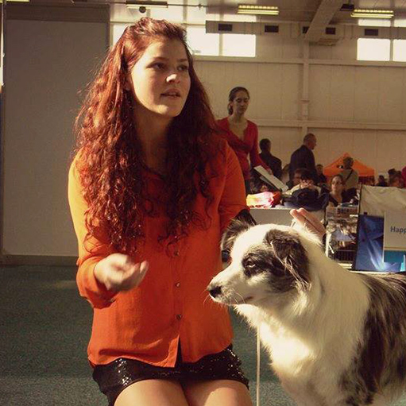
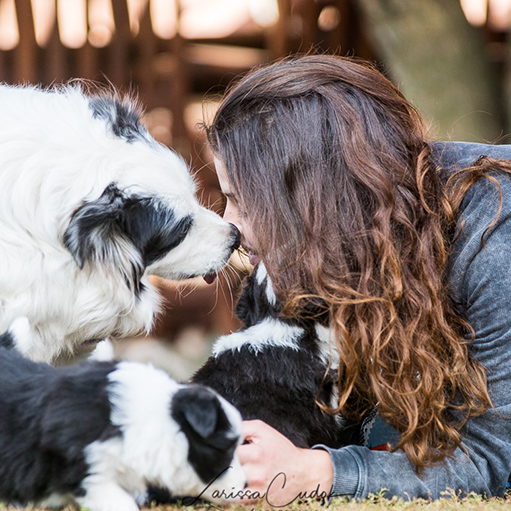

I have been around animals ever since I can remember. Growing up on a farm had a great impact on me and I am very grateful for it. I believe animals are souls that do not need to learn how to love because they already know it from the time they come to this world... That is why I sometimes seek the company of my dogs rather than company of people. Dogs don't judge you. They love you for who you are. At home, we have always had at least one dog around that's why I really can't imagine my life without them. First, there was a crossbreed named Allan, then a Slovak Cuvac named Ben, then a Lab Ronny and finally Ebi who made me completely fall in love with Borders even though she is not a purebred. I tried agility and frisbee with her and I couldn't get enough of her energy. She was able to run all day and wasn't tired at all! And then it happened. A strike from the above. Destiny. Call it whatever you want. I got my girl Aky and everything changed. She opened the door into the dog world for me and since then I have never looked back. It has been one crazy roller coaster during which we have been through thick and thin but I don't regret anything. I have made tonnes of new friends, got so much inspiration from so many people from all over the world. However, my main source of inspiration is my dogs... Who else is humble enough to play with an old tennis ball and be the happiest creature on the planet if you give them your time? Who else can look into your eyes and say so much without actually saying a word? Who else puts you always first and gives you their entire time? I am a young woman full of ideas and dreams. One of them came true when I started this kennel. I will be forever grateful to my parents & my brother who helped to make all this happen and of course to the dogs I now have. They are the future of Winyela and I can't wait to see what the future brings.
 
Please use the form below to contact me.